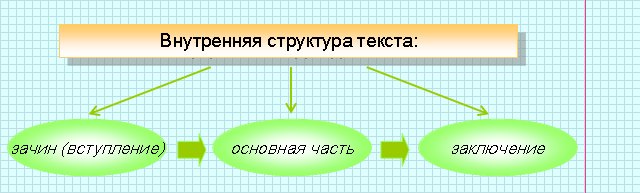
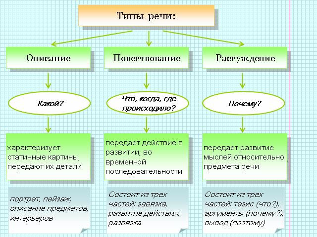

|
Текст – это речевое произведение, которое является результатом речевой деятельности человека, это основная коммуникативная единица, которая им используется во время речевой деятельности. |
 |
Текст характеризуется единством темы, замысла, основной мысли и смысловой
законченностью. У текста также есть определённая композиция (внутренняя структура). |

|
Текст может состоять из одного предложения, если оно полностью выражает его мысль. |
 |
Магазин работает без обеда. Закрыто. |

|
Стол, за которым работал Ипполит Матвеевич, походил на старую надгробную плиту. Левый угол его был уничтожен крысами. Хилые его ножки тряслись под тяжестью пухлых папок табачного цвета … (описание предмета интерьера). |
|
– Молоко и сено, – сказал Остап, когда «Антилопа» на рассвете покидала деревню,– что может быть лучше! Всегда думаешь: "Это я еще успею. Еще много будет в моей жизни молока и сена". А на самом деле никогда этого больше не будет. Так и знайте: это была лучшая ночь в нашей жизни, мои бедные друзья. А вы этого даже не заметили (рассуждение). |
|
Человек без шляпы, в серых парусиновых брюках, кожаных
сандалиях, надетых по-монашески на босу ногу, вышел из низенькой
калитки дома номер шестнадцать. Очутившись на тротуаре, выложенном
голубоватыми каменными плитками, он остановился и негромко сказал: – Сегодня пятница. Значит, опять нужно идти на вокзал (повествование с элементами описания). |